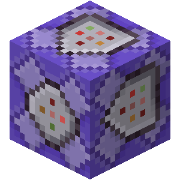
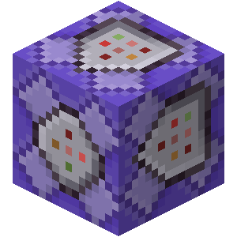
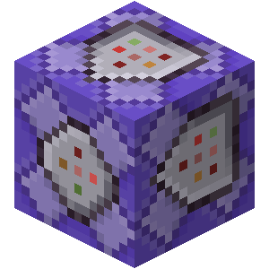
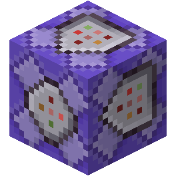

まずコマンドとは、Minecraftでマップやミニゲームなどを作る時は欠かせない要素であり、素晴らしいマップを作る影の暗躍者です。
そしてそこで重要になってくるのがコマンドブロックです。
これがコマンドブロック。3つのタイプに分かれているのが分かります。次はブロックごとの特徴を見ていきましょう
このコマンドブロックはレッドストーン信号が送られた時一回だけ入力されたコマンドを実行します。
 

 
